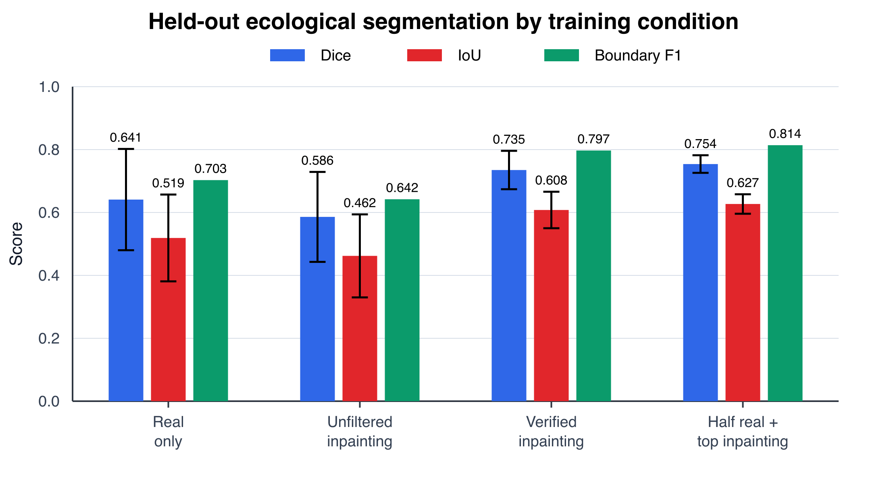
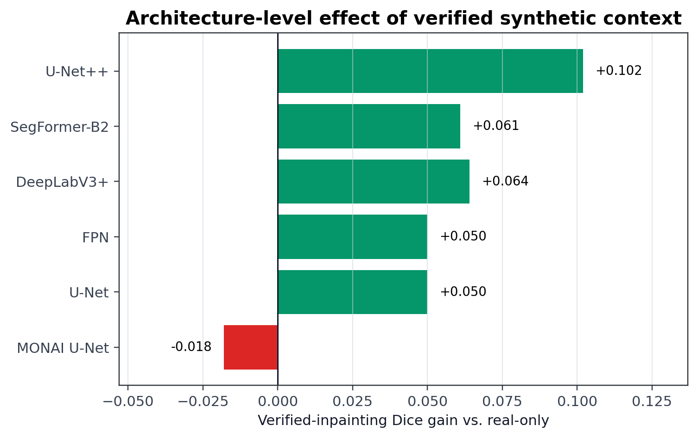
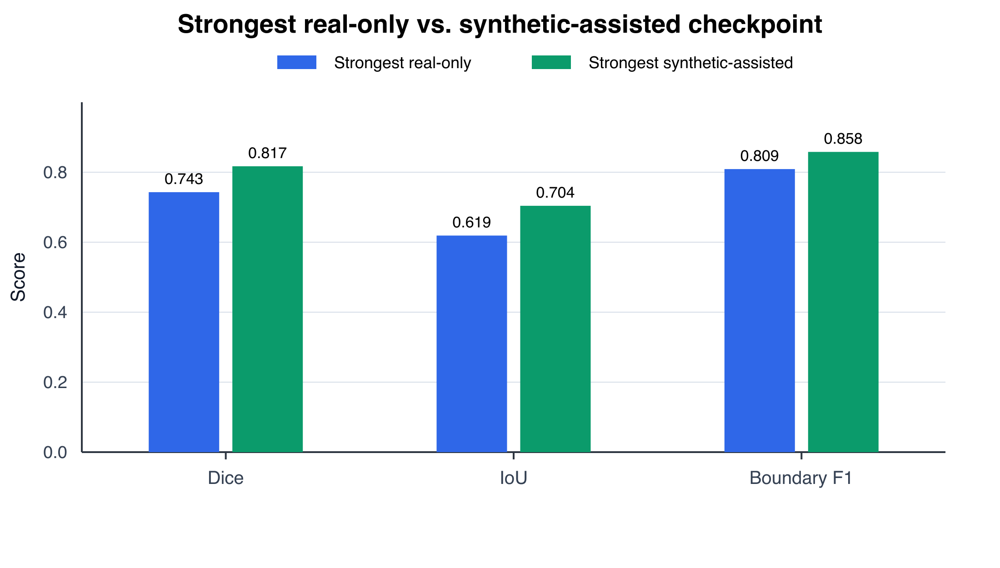
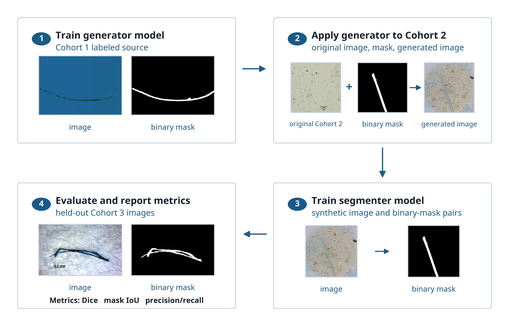

{kind=link}
{kind=link}
{kind=link}
{kind=link}
{kind=link}
Manuscript
Download the current manuscript PDF used to update this page.
Quality-controlled inpainting improves transfer to held-out ecological microscopy.
Conventional methods for microplastic identification in water samples are costly, slow, and dependent on specialized expertise. We present a deep learning segmentation framework for identifying microplastic foreground in microscopy images and evaluate whether synthetic ecological context can improve model performance when labeled real data are limited. We also contribute a curated image dataset with manually segmented microplastic masks, adding paired image-mask examples for supervised training and held-out ecological evaluation.
The workflow combines manually labeled laboratory microplastic images with generated inpainting examples selected for visible foreground change, non-empty masks, plausible object scale, and background diversity. In our results, adding verified synthetic examples improves segmentation across architectures by increasing exposure to diverse ecological scenarios while preserving pixel-level labels. The strongest synthetic-assisted model reaches Dice 0.817, IoU 0.704, and boundary F1 0.858 on the held-out ecological evaluation set, compared with Dice 0.743, IoU 0.619, and boundary F1 0.809 for the strongest real-only model.
Results
The strongest verified-inpainting checkpoint is U-Net++ at seed 37, with Dice 0.817, IoU 0.704, boundary F1 0.858, precision 0.802, and recall 0.846. The strongest real-only checkpoint reaches Dice 0.743, IoU 0.619, and boundary F1 0.809. The top synthetic-assisted run therefore improves Dice by 0.074 and IoU by 0.085 over the strongest real-only run.
The effect is not limited to one model family. All retained semantic segmentation architectures improve under verified inpainting, with U-Net++ showing the largest architecture-level Dice gain at +0.102.
Quality-controlled synthetic examples improve held-out ecological transfer over the strongest real-only checkpoint.
| Training condition | Runs | Dice | IoU | Boundary F1 | Best validation Dice |
|---|---|---|---|---|---|
| Real only | 18 | 0.641 +/- 0.161 | 0.519 +/- 0.138 | 0.703 | 0.758 |
| Real + unfiltered inpainting | 18 | 0.586 +/- 0.143 | 0.462 +/- 0.132 | 0.642 | 0.928 |
| Real + verified inpainting | 18 | 0.735 +/- 0.061 | 0.608 +/- 0.058 | 0.797 | 0.846 |
| Half real + top inpainting pilot | 3 | 0.754 +/- 0.028 | 0.627 +/- 0.031 | 0.814 | 0.812 |
Figures




Availability
Download the current manuscript PDF used to update this page.
Open the Harvard Dataverse archive with image-mask resources and ecological backgrounds.